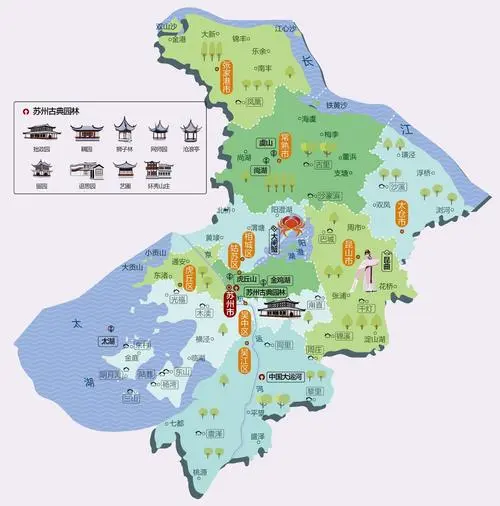

苏州，古称吴、吴都、吴中、东吴、吴门，现简称苏。苏州自有文字记载以来的历史已有
4000多年，公元前514年建城，是中国首批24个历史文化名城之一，
中国重点风景旅游城市，也是4个中国重点环境保护城市之一、长江三角洲重要的中心城市之一。 隋开皇九年（公元589年）始定名为苏州，以城西南的姑苏山
得名，沿称至今。 苏州是江苏省的经济、对外贸易、工商业和物流中心，也是重要的文化、艺术、教育和交通中心。
苏州旅游景点众多，旅游资源丰富。
其中 苏州以园林与水乡古镇名闻天下，苏州古典园林的历史可上溯至公元前6世纪春秋时吴王的园囿。“苏州园林甲天下”，
苏州园林是建筑、山水、花木、雕刻、书 画的综合艺术品，集自然美和艺术美于一体，构成了曲折迂回、步移景换的画面。苏州旅游景点除了著名的苏州园
林外， 还有众多的苏州古镇，有吴江同里、震 泽、昆山周庄、锦溪、千灯、常熟沙家浜、古里、太仓沙溪、浏河、吴中区甪直、光福、木渎、东山、高新区的镇湖等镇。
苏州属亚热带季风性气候，气候温和湿润，四季分明，尤以春秋旅游最佳。随着季节变换，
苏州园林的色彩也随之变化，并有相应的花卉展览。苏州属北
亚热带季风气候，气候温和、湿润，四季分明随着季节变换，苏州园林或繁花似锦，或碧树浓荫，或银装素裹，展现出万千美态。但不同季节的各种时令
美食，如枇杷、杨梅、塘藕、大闸蟹、腌笃鲜轮番上市，大饱眼福之余还能大饱口福。